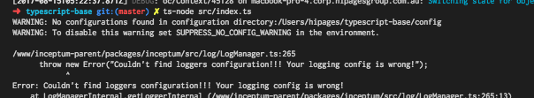

Creating a simple rest API
In this tutorial, we will be using inceptum-swagger to create a TODO API that talks to a mysql database.
Setting up our app
In this tutorial, we'll be using Typescript, because types are fun. All of this should work in plain javascript as well though!
We'll be basing our project off https://github.com/hipages/typescript-base, this provides a lot of the typescript configs and dotfiles we'll need.
For this example, we'll be just-in-time transpliling it with ts-node. In production we would be pre compiling our code to javascript, but this will be ok this purposes of this tutorial.
$ yarn global add ts-node
Now, lets add inceptum to our project...
$ yarn add inceptum
And use it to create our app:
// src/index.ts
import { InceptumApp } from 'inceptum';
const app = new InceptumApp();
app.start();
If you run ts-node src/index.ts you should see something like below.

It's complaining about not having any config, lets fix that!
Config
Lets create a file at /config/default.yml
app:
name: My Todo App
context:
name: BaseContext
logging:
streams:
console:
type: console
myredis:
type: redis
mainLogFile:
type: file
path: main.log
loggers:
- name: ROOT
streams:
console: debug
ts-node src/index.ts again... nice! Our app runs, but it doesn't actually do anything ...yet.
Swagger And Routing
Setting up the swagger plugin is easy! We just need to import the package and tell our App to use it. Inceptum Web will set up our express server, and SwaggerPlugin will set up our routing via our swagger file.
// src/index.ts
import { InceptumApp, SwaggerPlugin, WebPlugin } from 'inceptum';
import * as path from 'path';
const swaggerPath = path.resolve(`${__dirname}/../config/swagger.yaml`);
const app = new InceptumApp();
app.use(new WebPlugin(), new SwaggerPlugin(swaggerPath))
app.start();
We now need to set up our swagger file where we will define our routes. This seems pretty long, but most of it is just boilerplate
# /config/swagger.yaml
swagger: "2.0"
info:
version: "0.0.1"
title: ToDo sample application
host: localhost:10010
basePath: /
schemes:
- http
- https
consumes:
- application/json
produces:
- application/json
paths:
/todo/{id}:
x-inceptum-controller: TodoController
get:
description: Gets one todo by id
x-inceptum-operation: get(id)
parameters:
- name: id
type: string
required: true
in: path
responses:
"200":
description: Success
schema:
type: object
The intersting parts here are the custom attributes we've defind x-inceptum-controller and x-inceptum-operation.
The attributes are basically defining what method we are going to call on what controller, as well as what paramaters
we are going to pass to that method.
Finally, we need to let inceptum know where to find out controllers. To do this, we can add the following line to our index.js.
// src/index.ts
import { InceptumApp, SwaggerPlugin, WebPlugin } from 'inceptum';
import * as path from 'path';
const swaggerPath = path.resolve(`${__dirname}/../config/swagger.yaml`);
const app = new InceptumApp();
app.addDirectory(path.resolve(`${__dirname}/controller`)); // <--- Register our controllers
app.use(new WebPlugin(), new SwaggerPlugin(swaggerPath));
app.start();
Here we are using node's built-in path module to point inceptum to our controllers located at /src/controllers
We can now write our controller!
// src/controller/TodoController.ts
export default class TodoController {
async get(id, req, res) {
return res.send({
id: id,
done: false
});
}
}
Now, if you start your app and go to http://localhost:10010/todo/1234 in your browser you should receive the following JSON response:
{
"id": 1234,
"done: false
}
Cool! But static data isn't really useful. Lets add a database!
Adding a database
To add a database connection to our app, all we need to do is add the following to our config.yml. Inceptum will automatically
create a MysqlPlugin() (// TODO LINK) to our application. It will be registered under the name MainMysqlClient to the IoC container.
#config/default.yml
# ... other configs
mysql: # Telling inceptum to add a new MysqlPlugin() to our app
MainMysqlClient: # IoC name
master:
host: localhost
port: 3306
user: root
password:
database: testDb
charset: utf8
connectionLimit: 10
You'll notice that we've added a master conifg. We can also add a slave config that Inceptum will use if we want a read only
transaction, like so:
#config/default.yml
# ... other configs
mysql:
MainMysqlClient: # this is the name of the object that will be exposed in the context
master:
host: localhost
port: 3306
user: root
password:
database: testDb
charset: utf8
connectionLimit: 10
slave:
host: localhost
port: 3306
user: root
password:
database: testDb
charset: utf8
connectionLimit: 10
Feel free to edit the mysql config use a valid username/password so it can connect on your local. In this example both connections are pointing to the same place, but in production we can change this to point to a read only replica or user.
Connecting everything together
To talk to our database, we're going to create a Service class.
// src/service/TodoService.ts
export default class TodoService {
getTodo(id) {
// TODO Implement me!
}
}
Here, we're going to tell inceptum that we want access to the mysql client we just set up in the service we just created. To do this, we define a static property on our class to tell inceptum what dependencies we want to be injected.
// src/service/TodoService.ts
export default class TodoService {
static autowire = {
mysql: 'MainMysqlClient',
};
getTodo(id) {
// TODO Implement me!
}
}
We can now use the client in our service like below:
// src/service/TodoService.ts
export default class TodoService {
mysql: any;
static autowire = {
mysql: 'MainMysqlClient',
};
async getTodo(id) {
return this.mysql.runInTransaction(true, async (client) => {
const [todo] = await client.query(`SELECT * FROM todos WHERE id = ?`, id);
return todo;
});
}
}
Finally, we need to tell Inceptum that these service classes exist:
// src/index.ts
import { InceptumApp, SwaggerPlugin, WebPlugin } from 'inceptum';
import * as path from 'path';
const swaggerPath = path.resolve(`${__dirname}/../config/swagger.yaml`);
const app = new InceptumApp();
app.addDirectory(path.resolve(`${__dirname}/controller`));
app.addDirectory(path.resolve(`${__dirname}/service`)); // <--- Register our services
app.use(new WebPlugin(), new SwaggerPlugin(swaggerPath));
app.start();
Now, we need to wire up our service to our controller, we do this in a similar way to mysql
// src/controller/TodoController.ts
export default class TodoController {
service: any;
static autowire = {
service: 'TodoService',
};
async get(id, req, res) {
const todo = await this.service.getTodo(id);
res.send(todo);
}
}
Finally, lets let up our database table so we can query it live, run this SQL on your local mysql server:
CREATE DATABASE testdb;
USE testdb;
CREATE TABLE `todos` (
`id` int(11) unsigned NOT NULL AUTO_INCREMENT,
`done` bool DEFAULT false,
PRIMARY KEY (`id`)
) ENGINE=InnoDB DEFAULT CHARSET=utf8;
INSERT INTO todos VALUES('1234',true);
If we hit http://localhost:10010/todo/1234 now, you should see data straight out of your database in JSON form.
{
"id": 1234,
"done: true
}
Congrats! You have just created your first REST API powered by Inceptum!